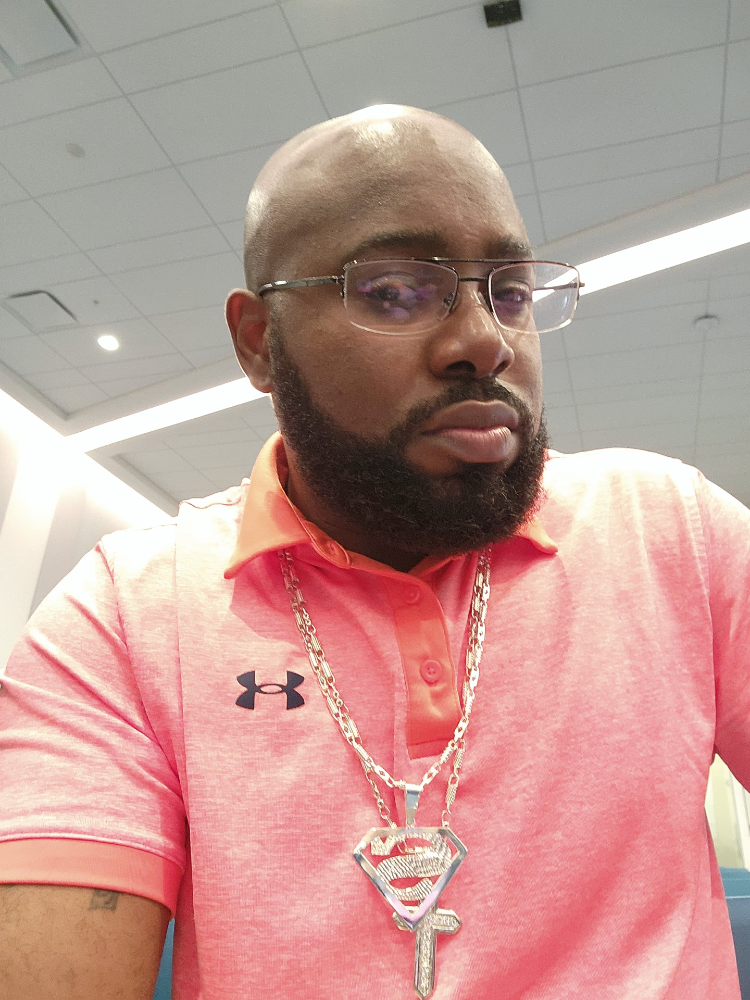

Welcome to my website
Hey there,
My name is Keston and welcome to my Top Three Favorite Things website.
About Me
I recently migrated to the United States in 2022 and started to pursue a degree in Information Technology at CCBC. My time there has since been one of excitement mixed with anxiety. I was born in the sweet twin island of Trinidad and Tobago. Trinidad and Tobago is a small Caribbean Twin Island filled with wonderful beaches, waterfalls, amazing foods and is also the land of Steel-Pan and Soca Music. There are many things I have come to enjoy, but if I had to only pick three, it would be as follows:
- Judo
- Steelpan
- Car-Customizing
